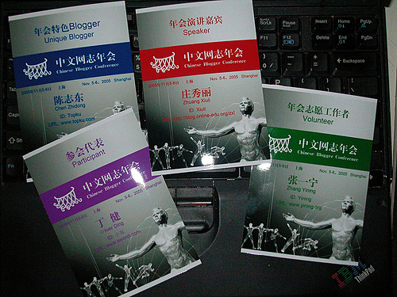

在Chinese Blogger Conference召开之前，这里介绍一下blogger·china’s photos ，实在是佩服做这个工作的人，能把那么多写BLOG的人照片收集起来，精神精力都是无与伦比的...认识一些未见其人先睹其态的面孔，有些可爱有些风雅有些......先熟悉一下他们的照片，如能在会场相遇，会是怎样的开始？我关注的BLOG有限，最近因为工作和其他事情忙碌，更无暇经常去看更新。我对网聚有莫名的烦感，但对这次大会却有些许期待。从2002年4月开始写BLOG至今，也许就是热情支持着的。
此次收到大会邀请有些意外，先前听说大多与会者都有某某公司机构的头衔，人数不能超过199人（法规上：200人属非法集会）。


确认参会的受邀特色Blogger：
广州 http://www.postshow.net
广州 http://in.comengo.net
北京 http://blog.wespoke.com
北京 http://www.chedong.com
北京 http://www.topku.com
深圳 http://www.zuola.com/weblog
北京 http://doubleaf.com
北京 http://herock.net
香港 http://www.azuremedia.net/tech/chi
重庆 http://woooh.com/
台北 http://blog.schee.info
台北 http://heterotopias.org
香港 http://sidekick.mocasting.com
香港 http://blog.hoiking.org
北京 http://www.1kg.cn
上海 http://www.wangjianshuo.com
福州 http://www.icebin.net/
柳州 http://www.kenlee.cn
南京 http://christina.tecinese.com/
上海 http://slashdotcn.org/
会议地址：上海巨鹿路915号巨鹿大厦二楼


cnbloggercon-badge-samples

cnbloggercon-badge-participant- mini

年会日程安排表
11月5日，第一天 上午
8：00—9：00 签到
9：10-9：20 开幕词
9：20-10：20 第一场讲演，isaac
10：20-10：30 休息
10：30-11：30 第一场对话与讨论：rebecca主持，全球化与blogger
第一天 中午
12：00-13：40 午餐（会）
第一天 下午
14：00-15：00 第二场讲演，XiuLi，主题：blog与教育
15：00-15：10 休息
15：10-16：10 第二场对话与讨论：hopesome主持，podcasting主题
16：10-17：10 第三场讲演，Wenxin，主题：weblog技术
第一天 晚上
夜游黄浦江（自愿参与方式）
11月6日，第二天 上午
9：00-10：00 第四场讲演，Horse讲演，主题：Web2.0
10：00-10：10 休息
10：10-11：10 第五场讲演，吕欣欣，主题：rss
11：10-11：40 特色blogger推介
12：00-13：40 午餐会
14：00-15：00 第六场讲演，SayOnly，主题：blog与媒体
15：00-15：10 休息
15：10-16：10 第三场对话与讨论：Jack主持，tags/folksonomy主题
16：10-16：30 闭幕词
2 Responses to “Chinese Blogger Conference”
2005-11-08
“法规上：200人属非法集会”此话怎讲？
2005-11-08
从照片上看，那个楼倒是个适合“非法集会”的好去处哩。
Leave A Reply
存档只读，评论已关闭。